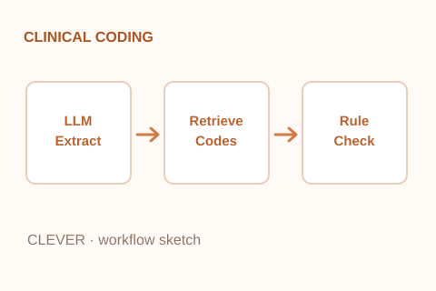
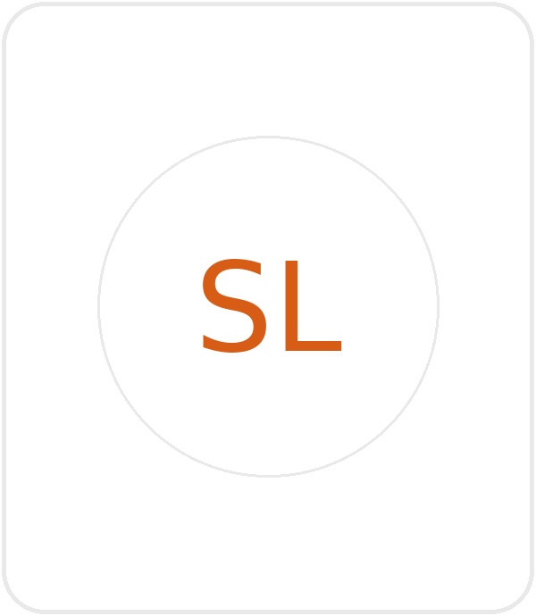
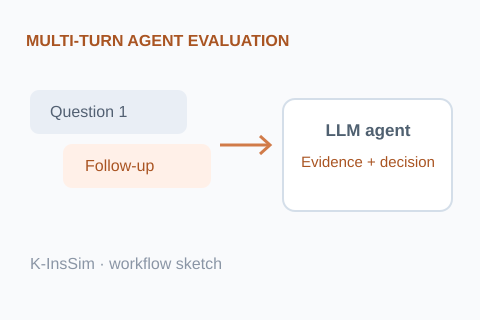

Matching Coding Functions to Computational Mechanisms: The CLEVER Framework for Automated Clinical Coding
JAMIA Open · Revised manuscript under review · 2026

Hello! I am a medical AI researcher at Samsung Medical Center. I received my M.S. in Digital Health from Sungkyunkwan University under the supervision of Prof. Won Chul Cha.
My research interests lie in developing and evaluating AI systems for real-world healthcare workflows. I am especially interested in how AI agents can leverage complex patient information and domain-specific knowledge to support a wide range of healthcare tasks. I am also interested in designing benchmarks and evaluation methods that reflect real-world healthcare tasks and assess the reliability and practical utility of AI systems.
I am always happy to connect with people interested in my research or potential collaborations. Feel free to reach out!
Named an Alternate Candidate for the Fulbright Graduate Student Program.
Graduated with an M.S. in Digital Health from Sungkyunkwan University.
Presented work on automated KCD coding at Medical Informatics Europe (MIE) 2025.

JAMIA Open · Revised manuscript under review · 2026

ACL Rolling Review · Under review · October 2026 cycle
* Equal contribution (co-first authors).